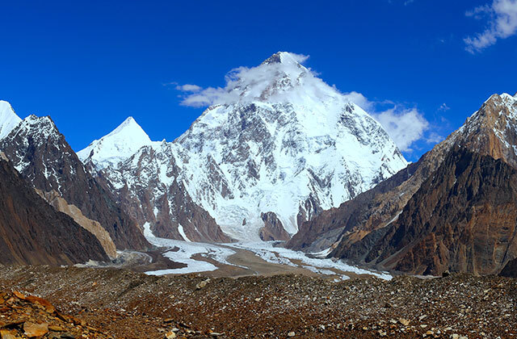
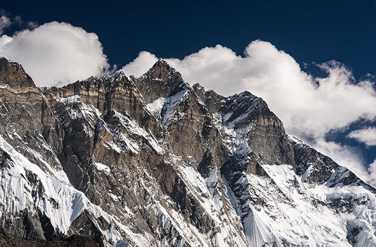

- Мир
- Достопримечательности
- Вопросы и факты
- Советы
Все они поражают своей мощью и неприступностью. Каждая имеет свою историю и рекорды. Рассказываем о десяти самых высоких вершинах мира — от Аннапурны до Эвереста. Существует 14 гор, высота которых превышает 8000 м, за что их часто называют восьмитысячниками. Все они расположены в Центральной Азии и поражают своей мощью и неприступностью. В этой статье мы расскажем о десяти самых высоких вершинах мира.
ЭВЕРЕСТ: САМАЯ ВЫСОКАЯ ГОРА В МИРЕ

Высота: 8848 м. Список самых высоких гор мира возглавляет гора Эверест (Джомолунгма). Она же входит в список семи вершин — самых высоких вершин всех частей света. Правда, в 2019 году французские ученые подтвердили, что считать высочайшей точкой надо не Эверест, а потухший вулкан Чимборасо в Эквадоре. Они напомнили, что радиус Земли на экваторе почти на 20 км шире, чем на полюсах, и, если измерять высоту от центра планеты, Чимборасо выше Эвереста — 6384 м против 6381 м. Свое предположение ученые подтвердили опытным путем. Впрочем, утверждение это все равно спорное, так как высота гор со временем может меняться. Так, после землетрясения в Непале в 2015 году китайские геодезисты провели мониторинг состояния самой высокой горы. Как выяснилось, с 2005 по 2015 год Эверест передвигался на северо-восток со скоростью 4 см в год и каждый год «подрастал» на 0,3 см. За десять лет гора передвинулась на 40 см и стала выше на 3 см. Но... после землетрясения уменьшилась на 2,54 см. Пока официальная высота Эвереста составляет 8848 м, но специалисты Непала и Китая решили ее перепроверить. Результаты должны объявить к концу 2020 года.
ЧОГОРИ: ГОРА-УБИЙЦА
Высота: 8611 м. Чогори является второй по величине горой в мире и единственной из десяти самых высоких гор, что расположена в Каракоруме. Остальные лежат в Гималаях. Ученым она также известна как К-2, где буква «К» означает «Каракорум», а 2 — порядковый номер вершины, который ей присудил британский полковник Томас Монтгомери в 1856 году. В народе ее еще называют горой-убийцей, так как взойти на вершину удается немногим. К 2010 году Эверест был покорен 5104 раза, а К-2 — 302. Среди альпинистов были и женщины. Так, первой на пик поднялась полька Ванда Руткевич в 1986 году. А в 2011 году австрийская альпинистка Герлинде Кальтенбруннер покорила не только Чогори, но и другие высочайшие вершины планеты, причем первая сделала это без кислородного баллона.
КАНЧЕНДЖАНГА: ЛЮБИМАЯ ГОРА НИКОЛАЯ РЕРИХА

Высота: 8586 м. Массив Канченджанга состоит из пяти горных вершин, четыре из которых превышают 8 км, и до 1852 года гора высотой 8586 м (Канченджанга-Главная) считалась рекордсменом. А потом ученые установили, что Эверест выше. В переводе с тибетского название горы означает «пять сокровищ великих снегов». Народ лепча, живущий у ее подножия, верит, что первые люди были сотворены из снега, взятого с вершины Канченджанги, и называют себя «детьми снежных вершин». Большим поклонником этой горы являлся художник Николай Рерих. Он писал ее на рассвете и закате, окутанную облаками и открытую взору, с разных ракурсов и точек... Сколько раз мастер изобразил Канченджангу, до сих пор не подсчитали.
ЛХОЦЗЕ: ДОЛГОЕ ВРЕМЯ НЕПОКОРЕННАЯ ГОРА
Высота: 8516 м. Точнее, такую высоту имеет одна из вершин — Лхоцзе-Средняя, а их три. Высота двух других тоже превышает 8 км, а Лхоцзе-Средняя до 2001 года входила в Книгу рекордов Гиннесса как единственная непокоренная вершина выше 8000 м. Самая высокая гора хребта Махалангур-Гимал находится на границе Китая и Непала. От Эвереста ее разделяет около 3 км, и некоторые маршруты пролегают так, чтобы альпинисты смогли покорить обе вершины.